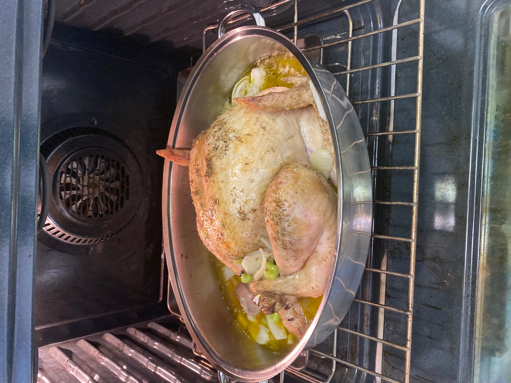

Roasted Turkey In White Wine

Description
Everyone's favorite dish during a Thanksgiving football game. Oven roasted turkey in white wine and buttery toppings promising no dry mouths or empty stomachs.
Ingredients
- 10-12 lbs Turkey
- 1 tbs. salt
- 1/2 tsp. pepper
- 1 tsp. dried thyme leaves
- 1 tsp. dried rosemary leaves
- 1/2 cup melted butter or margarine
- 1 cup chopped celery
- 1 med. onion, sliced
- 4 whole cloves
- 1 cup of white wine
- 3 tbls flour
- 2 chicken bouillon cubes
- pepper
Directions
- Remove giblets and neck from turkey; wash and set aside. Wash turkey thoroughly inside and out. Pat dry with paper towels. Remove and discard excess fat.
- Preheat oven to 400oF.
- Mix: Salt, 1/2 tsp. pepper, thyme and rosemary.Sprinkle half mixture inside turkey (remove liver). Bring skin of neck over back; fasten with poultry pins. Tie ends of legs together.
- Place turkey, breast side up, in shallow roasting pan without rack. Brush half butter over turkey. Sprinkle with remaining salt and pepper mix. Insert meat thermometer inside of thigh at thickest part.
- Roast, uncovered and brushing with remaining butter: 40 minutes (or lightly browned). Remove from oven. Reduce temperature to 350oF. Add: celery, onion, cloves, and turkey neck to roasting pan. Pour: 1 cup wine over turkey. Cover pan tightly with foil.
- Roast: Basting every 30 mins with pan juices for 2 hours.
- Remove foil. Roast 1/2 hour longer or until meat thermometer registers 185oF. Leg joint should move freely.
- Remove turkey from roasting pan to heated serving platter. Remove twine and poultry pins. Turkey should stand in warm place for 20 minutes prior to carving.
- Serve.